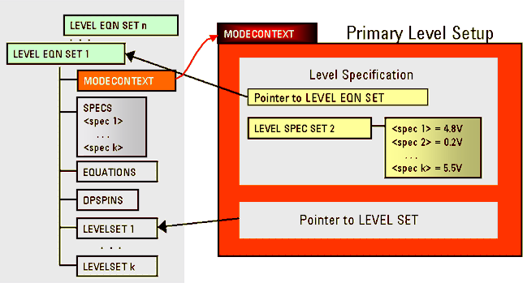

Definition of contexts in level file
The level setup data has to be assigned to the contexts assigned in the pin configuration.
The context for levels is specified in the level equation sets. That is, every level equation set is associated with a context. If you do not explicitly specify a context, the context "DEFAULT" is automatically set.
The keyword MODECONTEXT adds a context name to the level equation set. The level setup can be composed of many different level equation sets associated with different context names.
The context attribute of the level equation set determines the overall context of a primary level setup (level context) including that equation set
In other words, the primary level setup inherits the context of the associated level equation set.
The figure below illustrates the structure of a primary level setup:

Context "DEFAULT"
For a conventional level setup for std pins, it is not necessary to define any context. The DEFAULT context will be automatically assumed when no context is defined.
Context "differential"
The name "differential" is an arbitrary context name to describe a differential setup. You can use any other name, except DEFAULT.
The level setup for the example below includes differential pins in "FAST" mode and a termination chosen to be "center_tap" to set up a differential configuration.

The figure above shows you how to include the term keyword for the termination and the keyword MODECONTEXT (followed by the context name in quotes) in the level equation set.
The level context defined in the level equation set is displayed in the Level Setup Editor and in the Level Spec Tool.
Functional changes
- Introduced in SmarTest 7.10.3